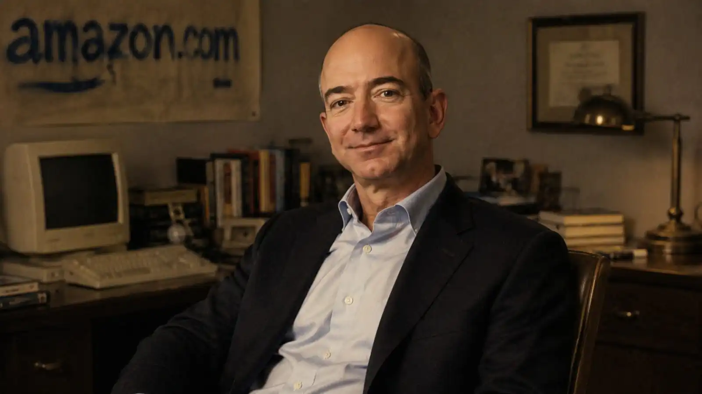

Por Francisco Urrego
Escrito el 22 ene 2026 | 09:12 h
⏱ 5 min lectura

Ilustración digital que representa a Jeff Bezos con fines artísticos.
- 1. La lógica implacable detrás del imperio Amazon
- 2. Amazon no nació para ganar dinero rápido
- 3. Obsesión por el cliente, no por el ego
- 4. Pensar como dueño, no como empleado
- 5. Cuánto dinero mueve Amazon y cuánto ha ganado Jeff Bezos
- 6. La parte de la historia que sigue vigente
- 7. El contexto que hizo posible a Amazon ya no existe
- 8. Jeff Bezos no ganó porque fuera el más listo. Ganó porque:
La lógica implacable detrás del imperio Amazon
Para interpretar mejor su historia, es necesario tener en cuenta que Jeff Bezos no construyó Amazon con carisma, pensar y llegara algún día, ni discursos largos de inspiración para dar ese primer paso. Él lo hizo con una mentalidad incómoda; sí, es probable que se haya arrepentido de tomar la decisión más dura.
Sin embargo, para la mayoría es un trabajo casi destructivo desde el nivel mental, de resistencia y presión mental a la que se debe someter durante años: pensar a largo plazo cuando todos buscan resultados inmediatos, soportar pérdidas cuando otros entran en pánico, tomar decisiones frías y acertadas, basadas en datos concretos y limpios, no en emociones que frustran el progreso ni temores que solo te hacen querer abandonar.
Esta historia no es el típico relato de “sueña y lograrás todo” o "espera, siéntate y cálmate, lo lograrás". Esta es la historia de cómo una lógica bien estructurada, aplicada y llevada a cabo puede crear una de las mayores fortunas de la historia.
Los comienzos: Ver lo que otros ignoraron
Jeffrey Preston Bezos nació el 12 de enero de 1964 en Albuquerque, Nuevo México, EE. UU. Su madre, Jacklyn Gise, era adolescente en ese momento, y su padre biológico, Ted Jorgensen, se separó poco después del nacimiento. Cuando Jeff tenía alrededor de cuatro años, su madre se casó con Miguel “Mike” Bezos, un inmigrante cubano que adoptó a Jeff, dándole su apellido. Desde pequeño, Jeff mostró curiosidad por la ciencia y la tecnología, y su padrastro lo apoyó mucho en sus intereses.
Jeff asistió a la High School de Miami Palmetto, donde continuó destacándose académicamente. Era un estudiante aplicado, especialmente en matemáticas y ciencias, y se graduó con honores en 1982. Durante esos años, trabajó en proyectos de ciencia y tuvo sus primeros acercamientos al mundo de los negocios, vendiendo productos y creando pequeños experimentos de inversión.
En 1994, Bezos trabajaba en Wall Street con un salario alto y una carrera segura. Pero detectó un dato que pasó desapercibido para muchos: el crecimiento anual del uso de internet superaba el 2.000%. No vio una moda. Vio una infraestructura en expansión. Renunció, se mudó a un garaje y empezó vendiendo libros porque era el mercado con más referencias disponibles. No porque amara los libros, sino porque la lógica del negocio lo indicaba. Nota: las grandes oportunidades suelen parecer aburridas al inicio.
Amazon no nació para ganar dinero rápido
Esta parte es una de las más duras, y es donde nadie, o bueno, casi nadie sigue. Nadie habla de esta etapa: durante años, Amazon perdió dinero. La mayoría de inversionistas dudaban, medios criticaban y competidores se burlaban todo el tiempo. Bezos no buscaba beneficios inmediatos. Buscaba dominar el mercado mientras se sostenía en el tiempo.
Su estrategia fue clara desde que inició: Reinvertir todo, mejorar la logística, reducir fricción para el cliente, construir confianza antes que ganancias. Mientras otros pensaban en el próximo trimestre, Bezos pensaba en la próxima década. Sacrificar el corto plazo para controlar el largo plazo puede ser la única manera de lograr el éxito anhelado.
Entre sus prioridades estaban:
- Reinvertir todas las ganancias en crecimiento y tecnología
- Mejorar la logística hasta niveles que otros consideraban imposibles
- Reducir fricción para el cliente, facilitando cada compra
- Construir confianza y reputación antes que perseguir ganancias rápidas
La paciencia estratégica es la ventaja que pocos están dispuestos a pagar
Lo más impresionante es que esta visión requería paciencia extrema y resiliencia mental. No se trata solo de estrategias de negocios; se trata de resistir la presión externa, ignorar las críticas y mantener la disciplina incluso cuando parecía que todo el mundo dudaba. Amazon no se construyó de la noche a la mañana; se construyó con decisiones frías, calculadas y consistentes, enfocadas en el futuro que Bezos imaginó antes que nadie.
Esta lección aplica más allá de los negocios cualquiera: si quieres construir algo que dure, debes estar dispuesto a esperar lo necesario, a aprender de las pérdidas y a pensar siempre en grande, pero siempre mantener el mismo proyecto, mucho más allá de lo que los demás consideran aceptable. Bezos enseñó que el verdadero crecimiento nunca es inmediato, y que dominar un mercado requiere visión, constancia y estrategia. Muchos sienten que cada día resta para lograrlo; con esta mentalidad, Bezos entendió que cada día que se va, suma y agrega intereses a su éxito.
Obsesión por el cliente, no por el ego
Bezos repitió durante años una frase incómoda para los directivos tradicionales: “Si te obsesionas con el cliente, todo lo demás se alinea solo.” Amazon bajó precios incluso cuando no convenía. Aceptó devoluciones que parecían pérdidas. Invirtió en envíos rápidos aunque costaran millones. ¿El resultado? Lealtad brutal del cliente y una ventaja casi imposible de copiar. No todos están dispuestos a perder, no todos están dispuestos a aceptar devoluciones. Es muy compleja la idea una vez empiezas a visualizar cómo es la intención detrás de este gran imperio.
Lo que muchos no ven es que esta obsesión con el cliente no era solo un lema: era una estrategia sistemática y tenía toda la razón; nadie regresa donde no lo atendieron, donde no cumplieron. Cada decisión, desde la interfaz de la web hasta la política de devoluciones, se tomaba pensando en la experiencia del usuario y no de sus bolsillos. Bezos entendió que el ego de un directivo o la búsqueda de ganancias rápidas podían destruir esta ventaja a largo plazo y quizás ya ni existiera Amazon para este tiempo.
Miremos un ejemplo práctico para comprender aún más las intenciones: Amazon Prime. En sus inicios, los envíos gratis, rápidos y sin complicaciones para los usuarios parecían un gasto enorme sin retorno inmediato. Pero al obsesionarse con la comodidad del cliente, Bezos creó una base de usuarios extremadamente leales que luego compran cientos de millones de productos cada año.
El crecimiento real nace cuando el cliente es la prioridad
Es como decir: "sabes, aquí me trataron bien, aquí estoy seguro". De este modo, el cliente no solo se fideliza, también comparte sus experiencias al usar Amazon. La lección clave: las empresas mueren cuando priorizan su ego sobre el valor real. En cambio, cuando el foco es el cliente, las decisiones difíciles se vuelven más claras y el crecimiento sostenible se vuelve inevitable.
Para los emprendedores y líderes, esto puede significar que el éxito no llega por perseguir la fama o los títulos que toman años, sino por resolver problemas reales de personas comunes en cualquier parte del mundo. Este precio se paga de muchas formas, a veces de manera incómoda, costosa y poco reconocida, cuando nadie te mira, mucho tiempo en soledad al principio. Bezos enseñó que poner al cliente primero no es solo ético, sino la estrategia más rentable y duradera que existe y podrá existir, ya que es inevitable que un buen servicio aporte valor de algún modo.
Pensar como dueño, no como empleado
Adoptar medidas como el cambio de mentalidad en sus empleados, siempre lo puso por delante, no quiero solo un empleado, quiero que ese empleado sienta que tambien es dueño de la empresa. De este modo Bezos impulsó una cultura donde cada líder debía actuar como propietario. No como alguien que “cumple horario”. Decisiones basadas en:
- Decisiones basadas en datos, no en opiniones.
- Uso constante de experimentos para aprender rápido y ajustar.
- Responsabilidad total sobre cada decisión tomada.
- Fallos permitidos, pero excusas no.
- Mentalidad millonaria: asumir el costo de tus decisiones te obliga a pensar mejor, con más lógica y menos impulsividad.
AWS: el movimiento que nadie vio venir.
Mientras todos veían a Amazon como una simple tienda online, Bezos lanzó
Amazon Web Services (AWS), apostando por una infraestructura tecnológica
que terminaría sosteniendo gran parte de internet.
Las jugadas invisibles que construyen fortunas (y su verdadero costo)
Hoy:
- AWS genera miles de millones de dólares.
- Sostiene gran parte de la infraestructura de internet.
- Financia otras apuestas estratégicas de Amazon.
Fue una jugada silenciosa, técnica y poco glamorosa. Exactamente el tipo de movimiento que crea fortunas duraderas.
Lección brutal: el dinero grande rara vez está donde todos miran al inicio.
El precio del éxito
Nada de esto fue gratis:
- Jornadas extremas.
- Decisiones impopulares.
- Sacrificios personales.
- Críticas constantes.
Bezos entendió algo que pocos aceptan: no se puede construir algo extraordinario sin pagar un precio extraordinario.
La enseñanza final de Jeff Bezos.
Cuánto dinero mueve Amazon y cuánto ha ganado Jeff Bezos
Amazon no empezó como un gigante ni como una máquina de dinero. Durante años fue una empresa que quemaba capital, acumulaba pérdidas y parecía incapaz de justificar su ambición. La mayoría solo veía una tienda online que no ganaba dinero. Bezos veía algo distinto: una infraestructura que algún día sostendría el comercio y los servicios digitales del mundo.
Décadas después, esa visión se tradujo en números que parecen irreales.
En 2024, Amazon reportó ingresos cercanos a
638 mil millones de dólares
,
con beneficios netos aproximados de
59 mil millones de dólares
,
casi el doble que el año anterior.
Fuente:
Amazon –
Resultados financieros
Para dimensionar lo que esto significa:
-
Los ingresos anuales de Amazon superan el Producto Interno Bruto de países completos como Suecia o Tailandia.
Fuente: - World Bank -
En algunos trimestres recientes, Amazon ha superado los
170–180 mil millones de dólares en ventas
,
cifras que la colocan muy por encima de la mayoría de corporaciones globales.
Fuente: - Forbes -
Amazon Web Services (AWS) representa una porción menor de los ingresos totales, pero genera una parte
desproporcionada de las ganancias gracias a márgenes extremadamente altos.
Fuente: - Statista
En cuanto a Jeff Bezos, su riqueza es consecuencia directa de haber mantenido esa visión durante décadas. Posee alrededor del 8 % de Amazon, por lo que su fortuna no depende de un salario, sino del valor que el mercado asigna a la empresa.
En 2025, su patrimonio neto ha sido estimado en rangos cercanos a los
230–260 mil millones de dólares
,
colocándolo de forma constante entre las personas más ricas del planeta.
Fuente:
Forbes – Jeff Bezos
Es clave entender algo: Bezos no se volvió rico porque Amazon ganara dinero rápido, sino porque aguantó el tiempo suficiente para que una estructura gigantesca comenzara a producir resultados. En días buenos de mercado, su patrimonio puede aumentar o caer en decenas de miles de millones de dólares sin que él mueva un solo dólar en efectivo.
En resumen, estas cifras no son casualidad ni suerte como muchos asumen cuando ven a alguien con mucho dinero. Son el resultado de decisiones frías, paciencia extrema y una obsesión por construir sistemas que escalan. Amazon no imprime dinero: ejecuta lógica a gran escala.
La parte de la historia que sigue vigente
No puedes replicar el contexto exacto de Jeff Bezos, ni su acceso a capital, ni el momento histórico en el que nació internet. Pero eso nunca fue lo importante. Lo verdaderamente replicable no es Amazon: es la forma de pensar que lo hizo posible.
Primero, la capacidad de pensar a largo plazo cuando todo a tu alrededor exige resultados inmediatos. Bezos entrenó su mente para soportar años de incomodidad sin validación externa. Esta habilidad no depende de dinero, depende de disciplina mental y claridad de propósito.
Segundo, tomar decisiones basadas en lógica y datos, no en emociones momentáneas. La mayoría abandona no porque su idea sea mala, sino porque no soporta la presión psicológica de ver pérdidas temporales. Bezos entendió que perder en el corto plazo no siempre significa estar equivocado.
Tercero, la obsesión por crear valor real antes de exigir recompensas. Resolver un problema mejor que nadie, incluso cuando no es rentable al inicio, es una estrategia que puede aplicarse en cualquier negocio, industria o proyecto personal.
Y quizás lo más incómodo: asumir responsabilidad total. Pensar como dueño implica aceptar que nadie va a rescatarte, que los errores cuestan y que el progreso real ocurre cuando nadie te está aplaudiendo.
La lección final es clara: no necesitas ser Jeff Bezos para aplicar estos principios. Pero sí necesitas estar dispuesto a pagar el mismo precio mental: paciencia, consistencia y decisiones difíciles sostenidas en el tiempo.
El contexto que hizo posible a Amazon ya no existe
No todo en la historia de Jeff Bezos puede copiarse, y fingir lo contrario es una forma rápida de autoengaño. Amazon nació en un momento histórico irrepetible: el inicio masivo de internet, con competencia mínima y un mercado global prácticamente virgen.
Hoy no es posible replicar ese nivel de ventaja inicial. Los mercados están saturados, los costos de adquisición de clientes son altos y la competencia es feroz desde el primer día. Pensar que basta con “tener una buena idea” para dominar un sector es una fantasía peligrosa.
Tampoco es replicable el acceso temprano a capital paciente. Bezos tuvo inversionistas dispuestos a esperar años sin retornos. En la actualidad, la mayoría del capital exige resultados rápidos, métricas inmediatas y crecimiento constante, lo que limita estrategias de largo plazo si no se gestiona con inteligencia.
Otro error común es intentar imitar la escala de Amazon desde el inicio. Infraestructura, logística global y precios agresivos requieren un volumen que solo se alcanza después de años de ejecución impecable. Copiar la forma sin tener el fondo suele llevar al colapso.
La lección incómoda es esta: no puedes repetir el contexto, el momento ni el terreno que Bezos tuvo. Pero sí puedes entender por qué funcionó y adaptar esos principios a una realidad mucho más competitiva.
El fracaso aparece cuando alguien intenta jugar el mismo juego, con reglas distintas, creyendo que el resultado será el mismo.
Jeff Bezos no ganó porque fuera el más listo. Ganó porque:
Jeff Bezos no era el único con acceso a internet, ni el único que vio su potencial. Tampoco era el empresario más carismático ni el más querido de su industria. La diferencia estuvo en cómo pensaba y, sobre todo, en qué estaba dispuesto a soportar.
Ganó porque pensó más lejos que la mayoría, cuando otros solo miraban el próximo mes. Ganó porque aguantó más presión, críticas y pérdidas sin cambiar de rumbo. Ganó porque tomó decisiones frías cuando otros se dejaron llevar por el miedo o la euforia. Y ganó porque construyó sistemas sólidos, no atajos frágiles.
En un mundo obsesionado con el dinero rápido, los resultados inmediatos y la validación constante, su historia deja una verdad incómoda que pocos quieren aceptar:
La riqueza real se construye despacio, en silencio y con lógica.
Código Millonario recomienda: